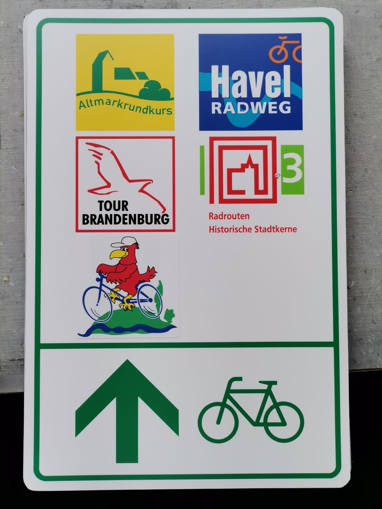
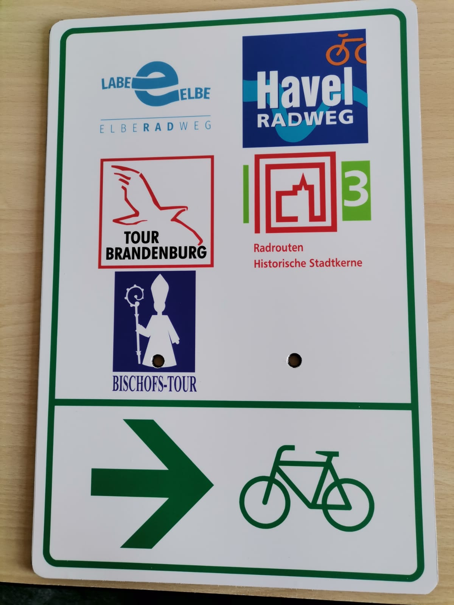
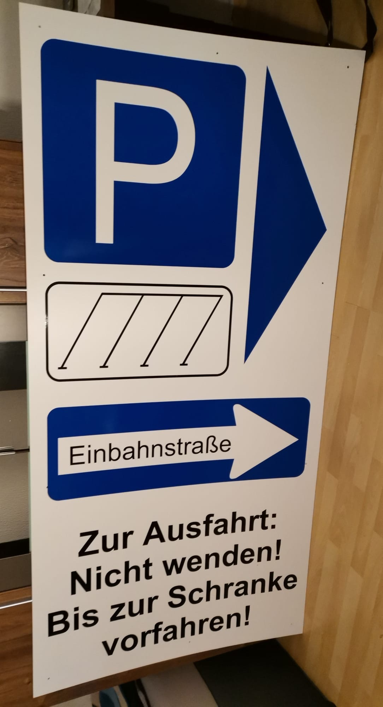
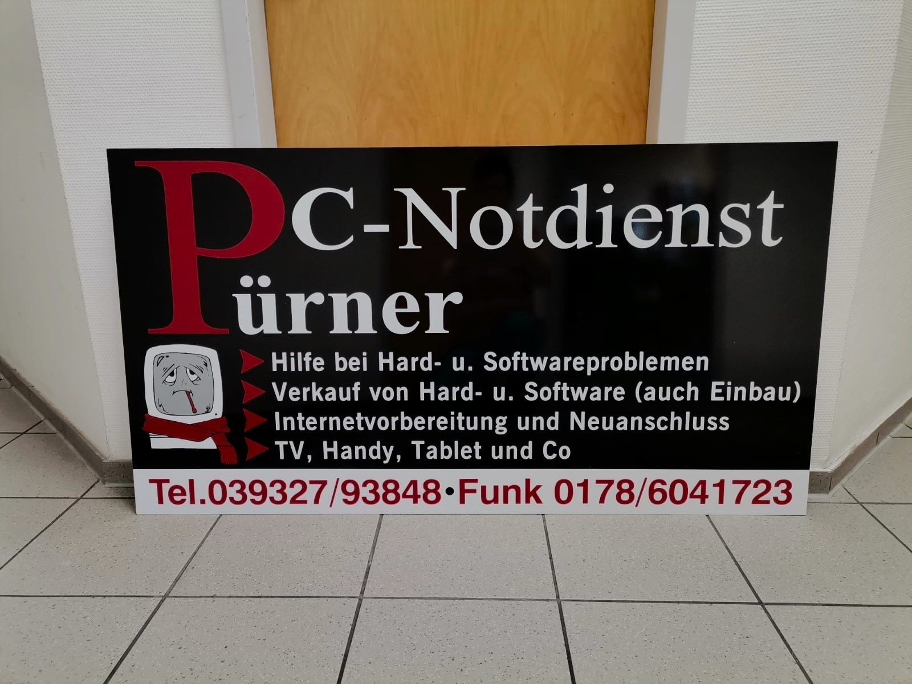
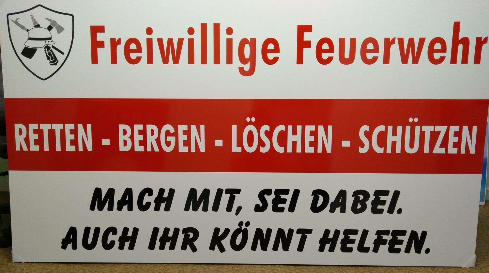

Schilder, die Eindruck hinterlassen
Ob Firmenschild außen, Orientierungstafel im Innenbereich oder Bauschild – mit unseren Schildern aus Aluverbund oder PVC setzen Sie klare und professionelle Akzente. Wir bieten sowohl hochwertige Folierungen als auch modernen Digitaldruck, damit Ihr Schild perfekt zu Ihrem Unternehmensauftritt passt.
Einsatzbereiche unserer Schilder:
- Firmenschilder – repräsentativ und optimal auf Ihren Unternehmensauftritt abgestimmt
- Wegweiser und Orientierungsschilder – sorgen für klare Orientierung und leiten Besucher effizient
- Bauschilder – großformatige Informationstafeln für Baustellen oder Projekte
- Türschilder – funktional und stilvoll, passend für Innenräume
Ihre Vorteile:
- Hochwertige Materialien für dauerhafte Nutzung
- Brillante Druckqualität oder präzise Folierung
- Individuelle Größen, Formen und Designs
- Montage vor Ort auf Wunsch möglich
Deutliche und stilvolle Beschilderungen vermitteln Kompetenz und hinterlassen einen starken ersten Eindruck bei Ihren Kunden.




